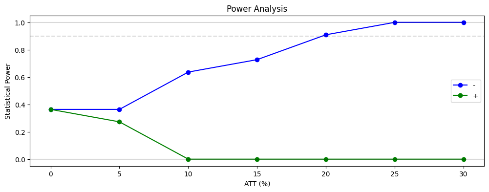

Power Analysis
[2]:
import matplotlib.pyplot as plt
import numpy as np
import pandas as pd
from azcausal.core.performance import power
from azcausal.core.synth import SyntheticEffect
from azcausal.data import CaliforniaProp99
from azcausal.estimators.panel.did import DIDRegressor
# define a function that provides a result object (with error) given a panel
def f_estimate_did_regr(panel):
return DIDRegressor().fit(panel)
f_estimate = f_estimate_did_regr
panel = CaliforniaProp99().panel()
outcome = panel.outcome.loc[:, ~panel.w]
# the number of samples for each power step
n_samples = 11
# length of the intervention
n_post = 10
# number of treated units
n_treat = 2
# create the intervention matrix
intervention = np.zeros_like(outcome.values).astype(int)
intervention[-n_post:, :n_treat] = 1
df = []
for att in np.linspace(0.0, 0.30, 7):
# create the treatment matrix for the effect
treatment = intervention * att * -1
# create synthetic panels where the last 8 time s
synth_effect = SyntheticEffect(outcome, treatment, intervention=intervention, mode='perc')
# estimate the treatment effect for different scenarios
results = [f_estimate(synth_effect.create(seed=seed).panel()) for seed in range(n_samples)]
# get the power from the results
pw = power(results, conf=90)
print(f"Percentage Treatment Effect {att:.3f} | (-): {pw['-']:.3%}")
df.append(dict(att=att, **pw))
df = pd.DataFrame(df)
Percentage Treatment Effect 0.000 | (-): 36.364%
Percentage Treatment Effect 0.050 | (-): 36.364%
Percentage Treatment Effect 0.100 | (-): 63.636%
Percentage Treatment Effect 0.150 | (-): 72.727%
Percentage Treatment Effect 0.200 | (-): 90.909%
Percentage Treatment Effect 0.250 | (-): 100.000%
Percentage Treatment Effect 0.300 | (-): 100.000%
[3]:
print("")
print(df)
plt.subplots(1, 1, figsize=(12, 4))
plt.title("Power Analysis")
plt.plot(100 * df['att'], df['-'], "-o", color="blue", label='-')
plt.plot(100 * df['att'], df['+'], "-o", color="green", label='+')
plt.axhline(1.0, color="black", alpha=0.15)
plt.axhline(0.9, color="black", alpha=0.15, linestyle='--')
plt.axhline(0.0, color="black", alpha=0.15)
plt.ylim(-0.05, 1.05)
plt.xlabel("ATT (%)")
plt.ylabel("Statistical Power")
plt.legend()
plt.show()
att + +/- -
0 0.00 0.363636 0.272727 0.363636
1 0.05 0.272727 0.363636 0.363636
2 0.10 0.000000 0.363636 0.636364
3 0.15 0.000000 0.272727 0.727273
4 0.20 0.000000 0.090909 0.909091
5 0.25 0.000000 0.000000 1.000000
6 0.30 0.000000 0.000000 1.000000
